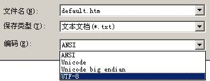
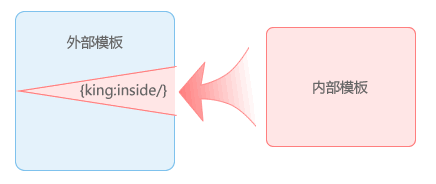

模板的制作
模板制作是整个系统中最核心的应用部分，如果对模板制作不了解，很难做好一个优秀的KingCMS网站。
KingCMS模板支持非XHTML模式，但是建议制作XHTML模式的模板。
基础知识
- 模板文件命名
- 模板文件名不能用中文，必须由英文和数字构成，扩展名为html|htm|shtml，为安全考虑，不推荐用php扩展名。
- 模板文件夹目录
- 默认的模板文件夹目录是template，但考虑到模板被盗问题，可以在 工具->网站参数设置 下面，修改其默认目录。
需要注意的是，修改这个值的同时，需要同步重命名服务器网站根目录下的template目录名称为上面修改的新的名称。
- 默认调用页
- 系统默认调用模板是default.htm，可以在 工具->网站参数设置 中重新定义，但需要注意的是，必须保证模板目录(Template)里存在这个文件。包括inside目录下面的每一个文件夹下面必须有这个模板。
即，default.htm被修改为new.htm的时候，必须要保证Ttemplate/new.htm文件的存在。
- 图片、CSS及javascript文件链接
- 不同于以往版本，PHP版的模板图片是放在网站根目录下面的images目录下面，在制作模板的时候，无需用完整路径，可以用 ../images/logo.gif 形式的相对路径链接来指定HTML连接对象，KingCMS模板解析引擎会自动对路径进行替换处理。
如，模板中调用一个logo图片为：<img src=”../images/logo.png/>
经过系统解析后为<img src=”/images/logo.png”/>或<img src=http://localhost/images/logo.png/>
当工具->网站参数设置中，网站首页地址设置为空的时候，出现前者；当地址设置为http://localhost的时候，出现后者，需要注意的是，不能以/结尾。
- 文件编码
- KingCMS默认的编码为UTF-8，模板进行保存的时候，编码类型必须选择为UTF-8，操作如下：
用记事本打开模板页面，在另存的时候，请注意图示中的编码。

内部模板和外部模板
关系图如下：

- 外部模板
- 即框架模板，网站中不经常改动的地方，如TopBanner和底部的Copyright等信息部分，以及<html><head>……</head><body>部分和结束标记</body></html>部分。
外部模板中必须有 {king:inside/} 标签，作为内部模板的接口代码
外部模板范例如下：
/* 外部模板开始 */
[html]
[head]
[title]
/*页面标题*/
[/title]
[/head]
[body]
[div id="top"]
/* 这里可以输出头部信息，如Logo等 */
[/div]
[div id="main"]
/* 外部模板结束 */
/*内部模板嵌入接口 */
{king:inside/}
/* 内部模板接口代码结束 */
/*外部模板下面部分开始 */
[/div]
[div id="bottom"]
/*这里可以输出页面底部信息*/
[/div]
[/body]
[/html]
/*结束HTMl模板代码 */
- 内部模板
- 显示不同应用内容的部分
内部模板以文章列表页为例：
{king:portal.article type="list"}/*调用文章标题列表，开始标记*/
____[a href="{king:path/}"]{king:title/}[/a]/*循环调用文章标题及连接*/
{/king:portal.article}/*结束文章列表标记*/
{king:portal.pagelist/}/*分页代码*/
内部模板中无需定义文件头信息等，通过KingCMS模板解析系统，外部模板中的{king:inside/}标签，将由内部模板替换后，成为一个完整的模板。采用内外模板的优点：减少在制作模板中重复制作的部分